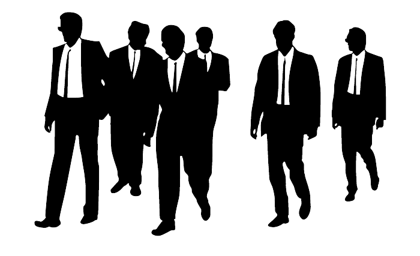

Reservoir Dogs
Reservoir Dogs is a neo-noir crime film directed by Quentin Tarantino. The film follows a group of professional criminals who are assigned to a heist job. However, when the job goes wrong, the group becomes trapped in a warehouse and their true colors begin to emerge. As tensions rise, the criminals are forced to confront their own morality and the consequences of their actions. Tarantino's signature style, featuring witty dialogue, nonlinear storytelling, and graphic violence, is on full display in this gritty and suspenseful crime drama.
